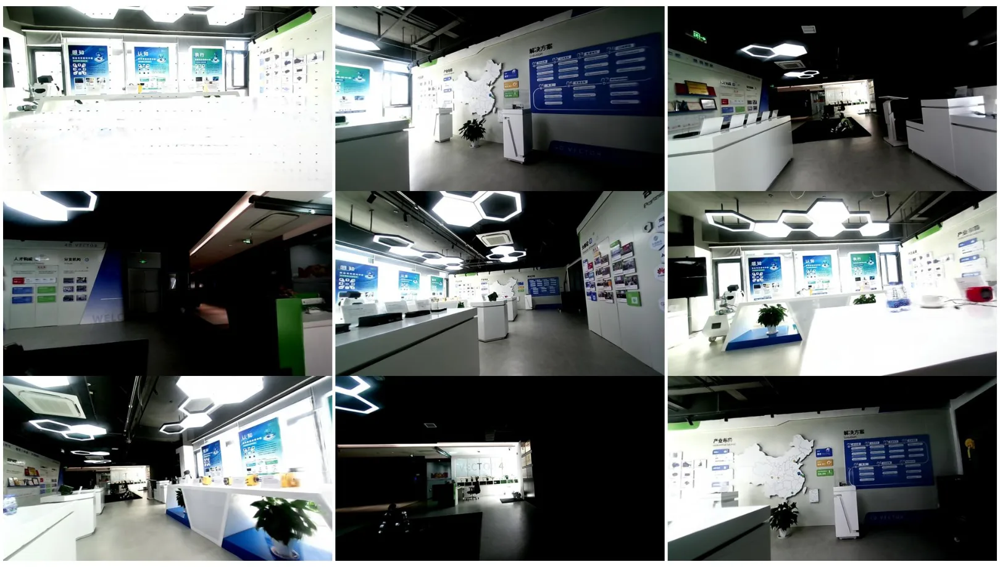
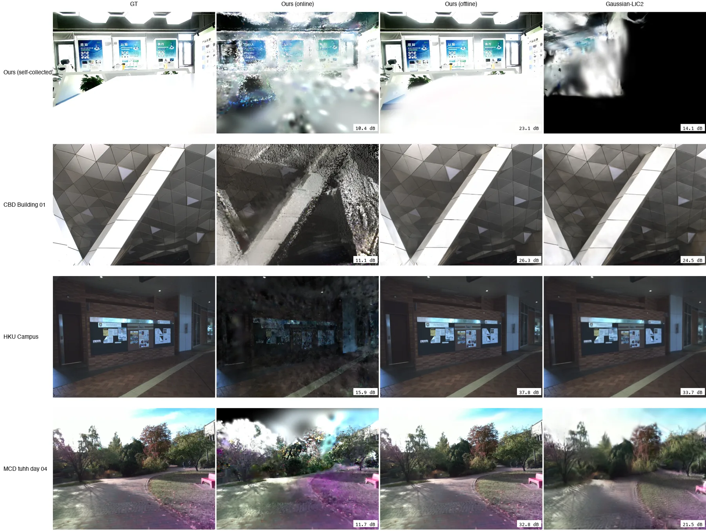
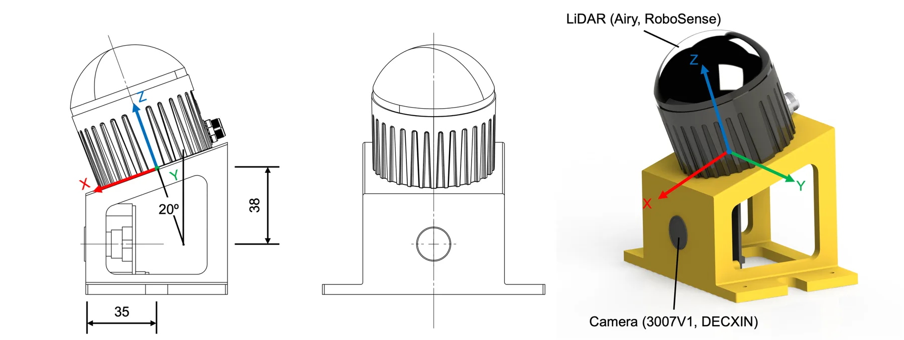

GEMOR-GS：把在线 3DGS 地图重建成“可重定位”的机器人世界模型，并量化标定误差如何传下去
GEMOR-GS: Global Extrinsic-calibration-refined Mapping and Online Relocalization for 3D Gaussian-Splatting SLAM
离线全局重建在全部 6632 对关键帧上胜过在线地图，单帧 PSNR 高 14.3–19.9 dB；同序列对比 Gaussian-LIC2 高 5.38–12.29 dB（零协议差异的 Retail 上 +9.43 dB）。位姿-地图交替优化 30.06 dB，只优化地图 27.01 dB（−3.05），只优化位姿崩到 6.64 dB。留出集重定位成功率：自采 100%、tuhh_day_04 100%、hku_campus 95%、Retail 86%、CBD 35%、弱纹理 Bright 0%。外参注入 1.51° 时平均 PSNR 降约 0.6 dB、重定位内点率降 4.4 个百分点。
Offline vs online PSNR gain
PSNR vs Gaussian-LIC2 (Retail)
Held-out relocalization success
Mean PSNR drop at 1.51 deg extrinsic error
作者、单位与技术谱系 · Research context
作者与单位
研究脉络
- GS-LIVO（IEEE T-RO 2025）方法基座关系：在线 IESKF 加入高斯光度残差的直接系统基础[论文 §2.2、§3.3]
- FAST-LIO2 / FAST-LIVO2方法上游关系：IESKF 误差状态传播与 ikd-Tree 点面残差骨架[论文 §3.3、表 2]
- Gaussian-LIC2（IJRR 2026）对照/上游关系：作为同赛道 LIV-3DGS 系统被系统性对比[论文 §4.3 表 8]
- GEMOR-GS 本篇推进本篇推进关系：把标定质量作为变量，串起离线全局重建与在线重定位[论文 §4.2/§4.3/§4.4]
合作网络
- 南昌大学 ↔ 南京四维向量科技Nanchang University → Nanjing 4D Vector Technology Co., Ltd.关系：共同署名（校企合作）[论文首页署名]
- GEMOR-GS ↔ 官方代码论文 → https://github.com/Vector-4D/gemor-gs关系：官方代码发布（企业组织仓库）[论文脚注与代码链接]
- GEMOR-GS ↔ GS-LIVOGEMOR-GS → GS-LIVO（Hong 等，IEEE T-RO 2025）关系：技术依赖（在线高斯建图与光度残差）[论文 §2.2、§3.3]
作者与单位来自首页署名及通讯作者脚注；校企关系只记录共同署名与代码仓库归属，不推断导师或雇佣关系。技术依赖按正文 “direct system basis / following” 记录。
方法本质拆解 · What actually changed
是不是微调？
不是微调预训练大模型，而是“在线小预算优化 + 离线大预算重训”：在线每帧只对 FoV 内高斯做 50 步 Adam；离线从精化后的关键帧 schema 重新初始化高斯，跑 14 万–24 万步并做全局致密化与球谐升阶。外参由离线直接法标定一次后固定，不参与任何梯度更新；XFeat、IESKF 都是现成组件。
有没有额外约束？
几何约束来自标定：LiDAR-相机外参与 28 ms 时间偏移固定，稀疏深度反投影决定深度监督，因此外参误差会直接写进监督信号；位姿更新有三重门控（N_min 有效像素、η_min 覆盖率、Δt_max/Δθ_max 步长）。训练目标上，渲染损失是 L1 + SSIM，另加置信度加权的重投影深度项，深度权重按调度衰减、收敛时让位给光度项。
推理/后端到底做了什么？
在线没有全局 BA：IESKF 顺序更新位姿，高斯只做 FoV 微优化并冻结快照；全局一致性靠离线阶段——位姿-地图交替优化 + 全局重建，最后按优化位姿重投影得到地图。重定位是检索式：XFeat + 数据库匹配 + RANSAC-PnP + 一次高斯 RGB-D warp，没有重新训练，也不改地图；成功后把位姿交回前端（作者把“把位姿送回滤波器恢复建图”列为未来工作）。
方法本质是什么？
本质是把“标定—位姿—地图”三者的误差传播显式拆开：先在离线把外参钉死，再用位姿-地图交替优化把在线滑窗留下的偏差摊掉，最后用大预算全局重建把外观补回来。它没有做的是在线闭环重定位（丢了要停下来查库）、也没有做外参在线估计；因此标定一旦漂移，系统只能整体退化而无法自愈。
输入是 LiDAR + 相机 + IMU 与离线标定外参；改变的位置是离线关键帧位姿与全局高斯参数；约束动作是三重门控、交替优化与固定外参的深度监督；直接效果是地图几何/外观显著提升且可被重定位重新进入。

桥接价值Bridge
桥接价值
这篇把 3DGS 地图从“离线渲染资产”推到“机器人可重入的世界模型”：地图不只要好看，还要几何准、可被查询、丢了还能重新定位。对我们最直接的桥接点是它把标定误差当成一等变量：外参偏差 0.153° 时 PSNR 还在噪声带内，1.51° 时六个序列里五个掉 0.76–2.02 dB，重定位内点率也同步下降。这意味着做多传感器融合时，“外参不确定度 → 地图质量 → 下游任务成功率”的传播链可以用同样的小剂量注入实验来标定，而不必等系统整体失败。
方法与模块Method
方法摘要
系统分四条路径，中间用一个五通道关键帧 schema（图像、LiDAR 投影稀疏深度、动态掩码、世界系点云、位姿）解耦在线与离线：在线 IESKF 继承 FAST-LIO2 的误差状态形式，按 GS-LIVO 的方式加入高斯渲染的光度残差，只对当前 FoV 做固定 50 步 Adam 微优化并冻结快照。离线先做位姿-地图交替优化（先固定位姿训图，再固定图优化位姿，再训图），每步位姿更新要通过三重门控（有效像素数、FoV 不透明度覆盖、步长上限）；随后从精化后的 schema 重建全局图，做无实时预算的致密化、剪枝与球谐阶数 0→3 提升。重定位走旁路：XFeat 关键点经存档深度反投影、动态掩码过滤后锚到最近高斯，构成轻量数据库；查询时描述子匹配 + RANSAC-PnP 出粗位姿，再从高斯图渲 RGB-D 做 warp 精化。
可迁移模块
第一是可复用的关键帧契约：把“图/稀疏深度/动态掩码/点云/位姿”五件套作为在线与离线之间唯一的接口，并配原子写与版本号，这能让我们把在线滤波与离线批优化解耦，离线换算法不影响在线。第二是门控式位姿更新：渲染有效像素、覆盖率和步长三个 gate，任一不满足就只存档不精化，避免坏帧污染估计——这是很便宜的鲁棒性保险。第三是评测设计：extrinsic dose-response（0.153°/1.51° 两档）+ held-out 重定位（剔除建图帧）+ 每帧配对 PSNR，三者组合能同时回答“标定多准才够”“地图能不能重入”。

证据Evidence
关键证据与数字
重建收益：离线图在 6632 对关键帧上全胜在线图，单帧 PSNR 高 14.3–19.9 dB；对 Gaussian-LIC2 在六个序列上高 5.38–12.29 dB（CBD +8.03、Retail +9.43、hku_campus +5.38、tuhh_day_04 +8.78、自采 +12.29、Bright +7.08）。消融：交替优化 30.06 dB，只优化地图 27.01 dB（−3.05），只优化位姿 6.64 dB（−23.42），说明位姿与高斯必须一起动。标定：+1.51° 注入后恢复误差 0.025–0.227°、平移 4.3–39.9 mm（四个序列），Bright 失败（4.626°、865.2 mm）；+5.0° 注入在 hku_campus/Retail 只部分恢复，Bright 失败。重定位：100%/100%/95%/86%/35%/0%（自采、tuhh、hku、Retail、CBD、Bright）；1.51° 外参下内点率 72.3%→68.0%（−4.4 个百分点，配对 |t|≈9.3、Wilcoxon z≈8.7，p<0.001），渲染 PSNR −0.94 dB，但两组 100 帧仍全部成功。效率：在线 50 步/帧，离线 14 万–24 万步、高斯从 2 万增到最多 236 万，8×RTX 4090。
边界与下一步Limits & Next Step
边界与风险
最硬的边界是纹理：Bright（弱纹理幕墙）外参 +5° 注入无法恢复、重定位 0/100；CBD（玻璃幕墙）重定位只有 35%。作者自己把原因归到特征不足与代价面多盆地，并建议补几何驱动定位或主动照明。第二个风险是标定验证方式：5 个公共序列并没有独立标定数据，而是“从同一 bag 切段 + 用发布外参作初值”的注入-恢复测试，因此它证明的是估计器自洽性，不是“无外参时也能标定”。第三个风险是规模：自采仅 90 s 室内展厅，离线重建用 8 张 4090、最高 236 万高斯，距离机器人在线部署很远；论文也没有给出与 LIV-GS/GS-LIVO 的端到端轨迹 ATE 对比，几何精度主要靠 PSNR 与 AbsRel 侧面反映。
下一步实验
实验一：在我们自己的 LiDAR-相机-INS 数据上复现 dose-response：把外参旋转注入 0.15°/1.5° 两档、平移注入 50 mm，测 PSNR、重定位内点率与轨迹 ATE 的三条曲线，确认“1.5° 是明显阈值”是否与我们的杠杆臂/时间偏移耦合方式一致。实验二：把它的门控（有效像素、覆盖率、步长）与我们现有的失效检测对比，看能否用更低成本提前发现标定漂移；再试把重定位内点率 <0.65 作为地图降级信号。实验三：把五通道关键帧 schema 移植到我们的离线批优化里，只保留接口与原子写，不改在线滤波，验证“在线/离线解耦”是否真能减少重复调试成本。



